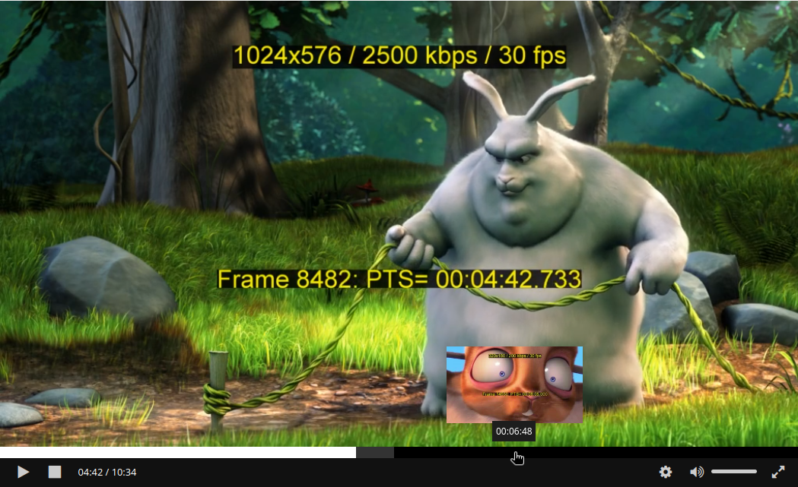

renderThumbnail
Description
Method allowing to render DASH thumbnails corresponding to a specific position:

You can see in that screenshot a content being played with a thumbnail acting as a seeking preview on top of a mouse pointer (the thumbnail show a part of the content with a squirrel on screen).Overview and simple case
To render a thumbnail, an application can call this method providing an object with at least two properties:
-
container(HTMLElement): The DOM element in which the thumbnail will be set. This can be any type element, the RxPlayer will then append an inner element containing thumbnail data inside. -
time(number): The position, in seconds, for which you want a thumbnail to be rendered.
renderThumbnail will then return a Promise that will resolve once the corresponding is
both loaded and rendered or reject if any of those operations either failed or were
cancelled (the error can be inspected to know which case we encountered, more information
below):
rxPlayer
.renderThumbnail({
container: containerElement,
time: 104,
})
.then(() => {
console.log("The thumbnail is now displayed");
});
This method tries to run in an optimal way:
-
If multiple calls are done to
renderThumbnailwith the samecontainerbefore any of those call finished, only the last call will be taken into account, the previous ones will be cancelled. -
When asking to render the same thumbnails multiple time in a row, the resource will be cached so only one request will be performed.
Error cases
A renderThumbnail can fail due to multiple reasons:
-
There is no thumbnail at the asked timestamp
-
The thumbnail failed to load
-
The thumbnail failed to render
-
Another call to
renderThumbnailwith the samecontainerelement was performed since
To allow you to detect which case was encountered, the renderThumbnail method will
return an Error object when rejecting. On that Error, a code property will be defined,
that may be set to a string which will be either:
-
ABORTED: the thumbnail-loading task was aborted before it has ended. The most probable is that a new call torenderThumbnailwith the samecontainerelement has been performed since then. -
NO_THUMBNAIL: the giventimedoes not seem to be linked to thumbnails. -
NOT_FOUND: the giventimecould have been linked to a thumbnail but no thumbnail was found for it once resources were loaded. -
LOADING: the thumbnail failed to load. -
RENDERING: the thumbnail could be loaded, but failed to render. -
NONE: Other uncategorized errors.
For example, we can write the following code:
rxPlayer
.renderThumbnail({
container: containerElement,
time: 104,
})
.then(
() => {
console.log("The thumbnail is now displayed");
},
(error) => {
switch (error.code) {
case "ABORTED":
console.log("The thumbnail request was aborted.");
break;
case "NO_THUMBNAIL":
console.log("There is no thumbnail at the asked time.");
break;
case "NOT_FOUND":
console.log("No thumbnail found at the asked time.");
break;
case "LOADING":
console.log("Failed to load the thumbnail.");
break;
case "RENDERING":
console.log("Failed to render the thumbnail.");
break;
case "NONE":
console.log("Other unrecognized error");
break;
}
},
);
Behavior of the previous thumbnail on error
Let's say you call renderThumbnail on a container that already contains a thumbnail
(from a previous renderThumbnail call).
When that new thumbnail will be loaded - and only then, it will replace the one that was
already there in container. But what should happen with that thumbnail that is already
there if the new renderThumbnail call fails - due to e.g. no thumbnail being at the
wanted time or due to the thumbnail request failing?
The default behavior is that, for any reason other than ABORTED (see errors), the
container element will be cleared of all thumbnails that were already there (for
ABORTED, container is not changed and will still contain the previous thumbnail).
We've thought that this was what was wanted from most applications: If we succeed to load a new thumbnail, we replace the previous one, if we fail, the previous one is still removed but is replaced by nothing.
But for cases where you want to keep the previous thumbnail displayed on an error, we
added an optional keepPreviousThumbnailOnError boolean property. By setting it to
true, the previous thumbnail will keep being rendered in container if a new call to
renderThumbnail fails:
rxPlayer.renderThumbnail({
keepPreviousThumbnailOnError: true,
container: containerElement,
time: 104,
});
Having several thumbnail tracks
DASH contents may present several thumbnail tracks, each for example having thumbnails of different resolutions.
To let you decide which thumbnail track you want to load thumbnails from, we let you
signal the wanted thumbnail track's through an optional thumbnailTrackId property:
rxPlayer.renderThumbnail({
thumbnailTrackId,
container: containerElement,
time: 104,
});
In turn, you can know the thumbnail tracks' id by listing them through the
getAvailableThumbnailTracks method
Syntax
player.renderThumbnail({
container,
time,
keepPreviousThumbnailOnError,
thumbnailTrackId,
});
- arguments:
- thumbnailInfo
Object: Information on the thumbnail you wan to load. This object can contain the following properties:-
container
HTMLElement: Mandatory. HTMLElement inside which the thumbnail should be displayed.The resulting thumbnail will fill that container if the thumbnail loading and rendering operations succeeds. If there was already a thumbnail rendering request on that container, the previous operation is cancelled.
-
time
number: Mandtory. Position, in seconds, for which you want to provide an image thumbnail. -
keepPreviousThumbnailOnError
boolean|undefined: Optional.If set to
true, we'll keep the potential previous thumbnail found inside the container if the currentrenderThumbnailcall fail on an error. We'll still replace it if the newrenderThumbnailcall succeeds (with the new thumbnail).If set to
false, toundefined, or not set, the previous thumbnail potentially found inside the container will also be removed if the new newrenderThumbnailcall fails.The default behavior (equivalent to
false) is generally more expected, as you usually don't want to provide an unrelated preview thumbnail for a completely different time and prefer to display no thumbnail at all. -
thumbnailTrackId (
string|undefined): Optional.If set, specify from which thumbnail track you want to display the thumbnail from. That identifier can be obtained from the
getThumbnailMetadatacall (theidproperty).
-
- thumbnailInfo
Examples
// showing the thumbnail for the second `52` inside `containerElement`
rxPlayer.renderThumbnail({
container: containerElement,
time: 52,
});
// Same thing but with a specific thumbnail track id.
rxPlayer.renderThumbnail({
container: containerElement,
time: 52,
thumbnailTrackId: "id1",
});
// Same thing but with the alternative behavior of keeping the previous
// thumbnail if the new operation fails.
rxPlayer.renderThumbnail({
container: containerElement,
time: 52,
thumbnailTrackId: "id1",
keepPreviousThumbnailOnError: true,
});